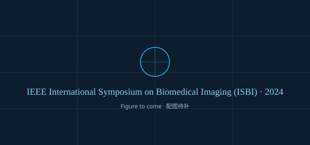
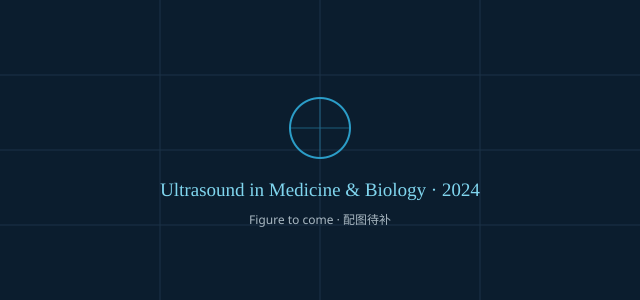

按应用领域 · 03
骨科脊柱
面向脊柱外科的手术规划与效果模拟：三维体表扫描与 CT 容积数据融合、自由扫查三维超声、图像拼接、胸椎增强与骨结构有限元分析——与脊柱外科临床团队深度合作推进。
综述
面向脊柱外科的手术规划与效果模拟：三维体表扫描与 CT 容积数据融合、自由扫查三维超声、图像拼接、胸椎增强与骨结构有限元分析——与脊柱外科临床团队深度合作推进。
- 三维体表 + CT 融合的强直性脊柱炎手术模拟（ISBI 2024）
- 探头搭载视觉 + IMU 的自由扫查三维超声
- 进行中：体表扫描、拼接、胸椎增强、有限元分析
06 · 代表工作
代表工作
每张卡片：上方配图，下方要点。
01

Combing 3D body surface and CT volumetric data for ankylosing spondylitis surgery outcome simulation
IEEE International Symposium on Biomedical Imaging (ISBI) · 2024
- 三维体表扫描与 CT 容积数据融合。
- 用于强直性脊柱炎的手术效果模拟。
02

Freehand 3D ultrasound imaging based on probe-mounted vision and IMU system
Ultrasound in Medicine & Biology · 2024
- 探头搭载视觉与 IMU 实现自由扫查三维超声成像。
- 扫描床外的体表与容积成像核心传感技术。
03

3D body surface scanning for spinal deformity ｜ 脊柱畸形三维体表扫描
Ongoing work · 2026
- 无标记三维体表地形测量，用于脊柱侧弯与强直性脊柱炎评估。
- 无辐射的外部测量，与 CT 互补。
进行中
04

Wide-field image stitching ｜ 大视场图像拼接
Ongoing work · 2026
- 体表与容积图像的大视场拼接。
- 扩展脊柱应用的有效视场。
进行中
05

Thoracic spine image enhancement ｜ 胸椎增强成像
Ongoing work · 2026
- 面向胸椎的成像增强技术。
- 提升手术规划与测量的可视性。
进行中
06

Finite element analysis of bone structure ｜ 骨结构有限元分析
Ongoing work · 2026
- 面向手术规划的骨结构有限元分析。
- 力学驱动的手术干预模拟。
进行中